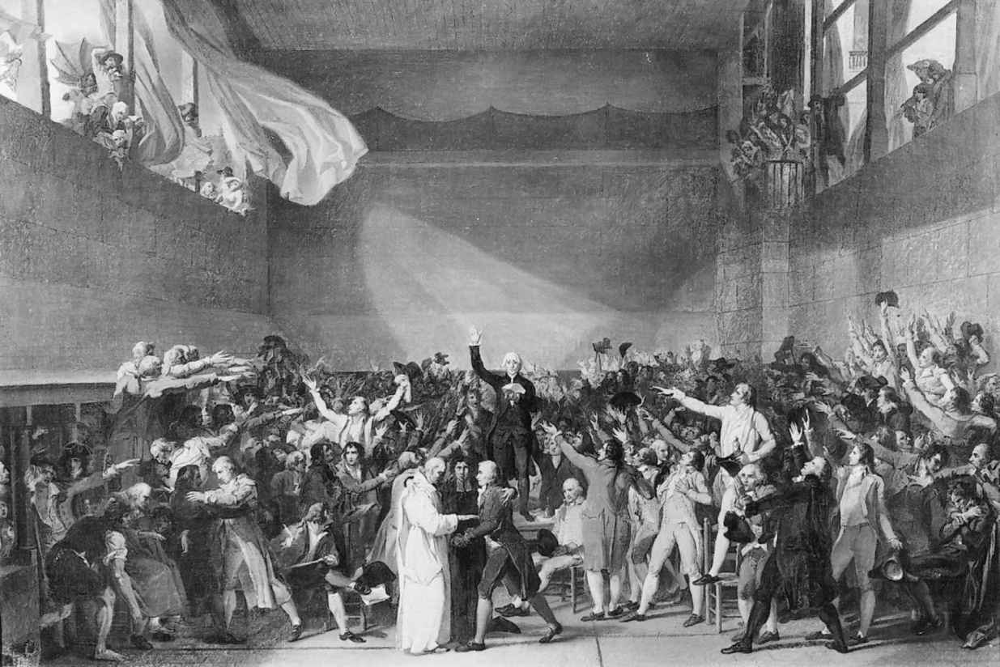
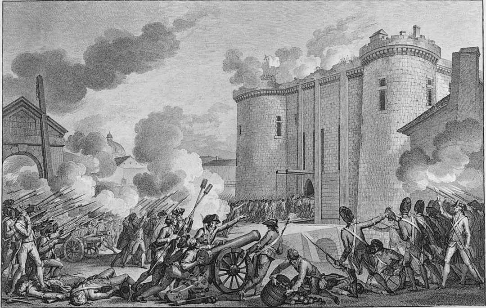
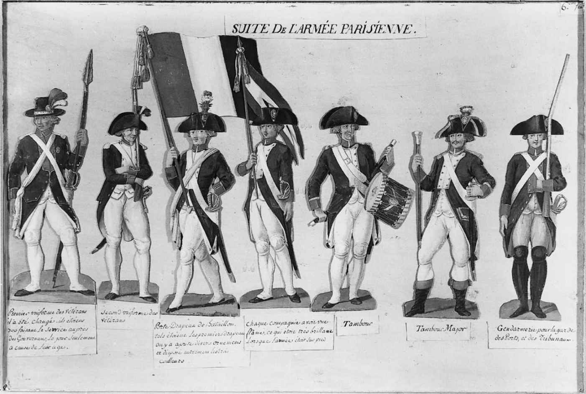
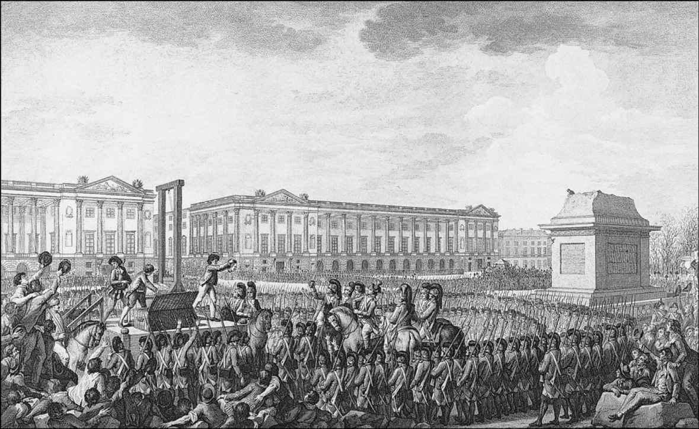
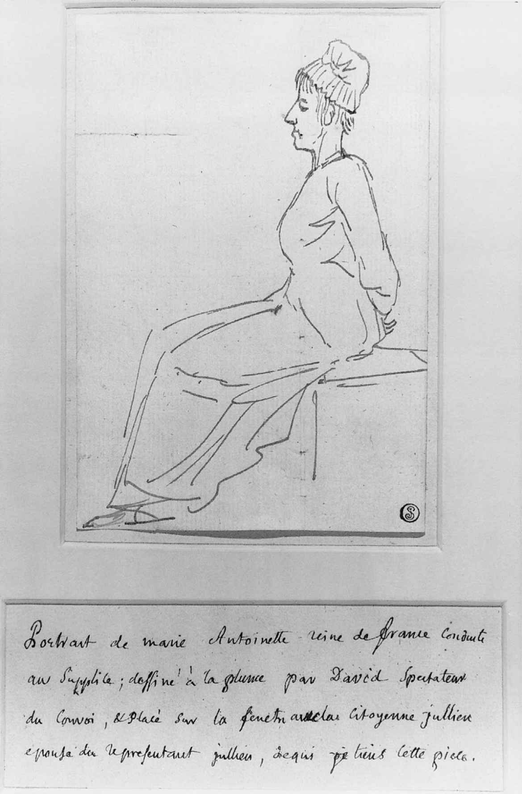

就在君主制权威陷入破产之前的一个月，一场大范围的冰雹席卷了法国北部，摧毁了大部分快要成熟的庄稼。由于卡隆于1787年批准谷物可自由出口，原有的库存已经很少，因此1789年收割季前几个月的气候，势必造成严重的经济困难。面包价格将会上涨，消费者将把更多的收入用在食品上，对其他商品的需求会随之下降。由于1786年商业条约的影响，制造业在廉价的英国商品的竞争冲击下已陷入衰退；就在面包价格飙升时，失业也开始蔓延。一场罕见的严冬更让困难局面雪上加霜：河流封冻，磨坊停转，大宗运输无法进行；河流终于解冻时，洪水又到处泛滥。因此，即将到来的政治风暴将会发生于一场经济危机的背景下，而且会受到后者的深刻影响。
内克复职后，迅速恢复对谷物贸易的管控。但为时太晚，此举只不过让他惊人的人气更加高涨。他需要这种人气来处理其他难题。最紧迫的难题是三级会议应采取何种形式。布里安最后的举措中，有一项是宣布国王对这个问题还没有确定的看法。对于巴黎高等法院，这似乎暗示着一种事先操纵这次大会的意愿。为预防这样的情况出现，法官们于9月25日宣布，三级会议应按最后一次召集时，即1614年时的形式组成。眼光敏锐的观察者立即意识到，这是一个试图延长制度性瘫痪的方案，而这一瘫痪症已经导致绝对君主制的瓦解。1614年的三级会议上，三个等级分厅议事，分别代表教士、贵族，以及第三等级——所有其他人。代表们按等级表决，因此任何两个等级都可以在表决投票上超过第三方。由于教育、财富和产权在整个18世纪的发展，这样的权力分配和代表制度不再能反映现实状况；一个主要由贵族组成的巴黎思想群体开始成立所谓“三十人委员会”，试图在公共舆论中掀起反对浪潮。这些人的小册子在全国广泛传播，当再次召集的缙绅会议拒绝内克的催促，并支持1614年的会议形式时，他们的努力更是平添了力量。缙绅们的谨慎看起来——或有人使其看起来——是旧的“特权等级”为掌握权力而企图损害国家的绝大多数人。自1787年初的危机以来，社会对抗的政治第一次开始主导公众辩论。那个冬天最著名的小册子出自叛逆教士西耶斯之手，标题便在追问“什么是第三等级？”“是一切。到此刻它在公共秩序中处于什么地位？什么也不是。它想要什么？某种地位。”西耶斯争辩说，任何要求某种特权的人，都应因为这一事实而把自己排除出民族共同体。特权就是赘疣。
到12月，反对1614年形式的呼声已经被广泛认可，以至于内克觉得有了胆量去采取行动。他颁布命令说，鉴于第三等级在国民中的比重，它的代表人数应翻倍。但是，如果还是按等级而非按人头表决，这显然没有什么意义。不过内克相信，一旦三级会议召开，教士和贵族可能被劝导放弃自己的特权。他指望的是，第三等级代表翻倍是个不彻底的措施，对该措施的普遍不满会支配1789年春的选举，届时抵制各等级的联合将变得几乎不可想象。按人头表决的确成为选举大会关心的中心内容之一；但这些大会也是分裂的，每个等级选举自己的代表，其后果是使得事态进一步两极分化。情绪激昂的群众支持第三等级的要求，面对这种情形，教士和贵族选举人开始把自己的特权视为其身份的根本保障；于是，他们选举的人大部分是坚定的不妥协者。从各方面看，在起草用以指导当选代表的陈情书（cahiers，一种申诉清单，也是1614年形式的一部分）的过程中，观念进一步明确化了。此刻出现的问题不仅是三级会议如何组成，还涉及它需要处理的议题。起草陈情书相当于现代的第一次民意测验，申诉和意愿范围之广让人瞠目结舌。几个月前还只是梦想的东西，陡然之间有了实现的可能；陈情书的基调清楚地表明，很多选举者的确希望这些梦想能通过三级会议兑现。
但是，当三级会议于5月5日在凡尔赛宫召开时，人们深感失望。会议一开始，内克作了一个令人厌烦的报告，而且，第三等级的代表一开始就清楚表态，说他们不会作为一个单独的等级商议任何事务。他们呼吁贵族和教士与他们一起议事，但没有得到回应。虽然有少数贵族同意共同议事和表决，但即使是他们也拒绝突破等级区分。僵局持续了六周，在此期间，面包价格一路上涨，很多地区的公共秩序开始崩溃，春天曾到处洋溢的希望开始转向失望。终于，在6月10日，西耶斯提议第三等级“断绝联系”并开始单方面议事。表决结果为压倒性的赞成，随后他们邀请另两个等级一起进行资格审查，三天之后，少数教区神甫打破特权等级的团结，答应了这个邀请。随后几天，其他教士陆续加入，于是，这个不再仅仅代表第三等级的团体认为，现在需要一个新名称。在西耶斯的再次动议下，6月17日，这个团体选择了一个响亮而坚定的名称：国民议会。它随即颁布法令，取消一切税收，然后对其重新批准。个中意味显而易见：议会以整个法国的名义掌握了主权。
这是法国大革命的奠基性行动。如果国民是主权者，那么国王就不再享有最高权威。路易十六因数天前长子早夭而深受打击，此刻他一扫忧伤，宣布将召开御前会议，以发布自己的纲领。为此，自封的国民议会常用的会场被封锁，但这个可疑的议会于6月20日在一个室内网球场集会，举行了一场群情激昂的宣誓，声称在赋予法国一部宪法之前决不解散。议员们的意志在三天之后面临首次考验：国王在做出一些让步之后，否决6月10日到17日之间的所有要求，下令各等级分厅议事。议员们拒绝了；但内克辞职的消息让国王一时慌乱，于是他未对议会采取行动。到这个时候，每天都有一些躁动的群众从巴黎涌向凡尔赛宫。由于意识到不能再指望国王的支持，主张等级分离的贵族和教士发现他们的内部团结正在走向瓦解。很快他们便大批加入国民议会，6月27日，国王正式命令最后一批强硬派也应加入。内克收回了辞呈。王权看来彻底投降了。
6月26日，内阁命令一些部队向凡尔赛集结，内克对此并不知情，可能一开始国王也不知道。随后几周，更多的部队接到了命令，到7月初，深感不安的议会要求国王撤走军队。国王回答说，为保障公共秩序，必须部署军队——这个理由看来足够充分；但是，当7月12日内克被解职时，更为凶险的猜疑出现了。两万士兵现在就驻扎在法兰西岛四周，看来已经摆好阵势以震慑首都——一旦需要采取行动压制议会的话。在听到内克被解职的消息后，巴黎炸开了锅，人们既害怕又愤怒。德国雇佣兵企图驱散群众的行动使事态更加恶化，法兰西卫队常驻巴黎的守军开始逃离部队。很快，成群饥饿的叛乱者抢劫城里的军事据点，夺取武器、弹药及储存的面粉。7月14日，他们向庞大的巴士底国家监狱聚集，这座监狱上的枪炮控制着巴黎城的整个东部边缘。在逃兵的帮助下，人们向监狱发起进攻并迫使它投降，进攻开始时向群众开火的指挥官被杀。巴黎落入了叛乱者之手。巴黎周围的军队的确足以镇压这场反叛，但指挥官们跟国王说，他们也许不会服从开火的命令。在这种局面下，国王无能为力，于是下令撤军。一场反革命就这样被击败了。国民议会得到了拯救。

图4 1789年6月20日：网球场宣誓。国民议会发誓，在赋予法国一部宪法之前决不解散
因此，7月14日不是法国大革命的开端，而是把开端终结了。打开阴暗神秘的巴士底狱，也没有解放预料中受专制主义迫害的大批人民。里面只有七个囚犯。但这座中世纪堡垒是王权的象征，一开始就自发摧毁它，也象征着一个声誉扫地的旧秩序的终结。6月17日以来的一个月中曾支持国王反击行动的人，如今也承认当前的局势：国王的兄弟阿图瓦及其最亲密的宫廷朋友立刻离开了这个国家，成了第一批流亡贵族。国王前往巴黎后，接受了三色革命帽徽，后者来自匆忙组建的民兵（不久被称为国民卫队）；国王还认可了自行任命的市政机构，国民议会也终于着手进行在网球场宣誓承担的制宪工作。选民们春天确立的强制委托权被废除，作为宪法序言的权利宣言也开始起草。但就在此刻，巴黎和某些外省城市的骚乱已传播到农村；在新的收割季到来之前数周，农村地区发生了一场“大恐慌”，“盗匪”横行乡间，毁坏庄稼，抢劫无助的农民社区。在普遍的妄想狂的气氛中，对领主房屋和封建权威象征物的攻击随处可见：正如陈情书显示的那样，农民认为这类象征物是他们所有负担中最不合理的东西。议会中的有产者，不管是不是封建权利的所有者，着实对农村出现的大混乱感到惊恐。为挽救动荡的局面，一个激进团体计划采取激烈措施，即废除封建捐税。8月4日夜，一个大贵族提出了这一计划，立刻在议会赢得了热情的赞许，该机构在成立三个月来的大部分时间里，一直颇不耐烦地避免采取积极行动。不久，一些非封建权益也被提议废除。各种特权，旧制度社会组织的命脉，已经在长篇大论中被废弃了。官职买卖制同样如此，很多特权就是从这种制度衍生而来的。人们还宣告了免费司法和税收平等。教会被剥夺什一税，这是教区神甫最基本的收入。会议末了，当议会宣布国王是“法国自由的恢复者”时，法国社会生活的诸多组织已注定要在整个大革命中最激进的几个小时之内被摧毁。

图5 1789年7月14日：攻占巴士底狱
正如现场的几个人注意到的，那晚的气氛中有某种魔力——这魔力起了作用。农村的骚乱逐渐平息了。议会（现在叫国民制宪议会）得以继续其宪法制定工作。《人权和公民权利宣言》最终于8月26日颁布，接下来的几周，该宣言奠定了立宪君主制的几个首要原则，排除了立法机构的两院制，并授予国王对新法律的有限否决权。然而，国王似乎并不打算立即接受这一限制，或者接受8月发布的所有重大举措。7月出现的各种猜疑，现在又开始在巴黎发酵，那里的民众显然把自己视作大革命的拯救者和守护人。10月初，凡尔赛宫传来新的军队部署的消息，报道者是巴黎的一份报刊，此时出版已经自由，报纸持续激增；于是恐慌蔓延开来，人们以为国王又要尝试夏天没有成功的企图。数以千计的妇女不顾国民卫队的约束，向凡尔赛宫进军以对国王施加压力。她们侵入凡尔赛宫的议会大厅，闯入宫殿，威胁到王后的生命安全。最后她们大声要求，唯一能让她们满意的做法，是王室跟她们一起去巴黎。国王马上发现自己没有别的选择，10月6日，他随着凯旋的妇女们一起回到首都。几天后，议会也迁往巴黎。
现在，路易十六成了巴黎的囚徒，直到1792年8月君主制被推翻，他将一直如此——除了1791年6月那次倒霉的外逃。然而，议会的处境同样如此。议员们知道，他们之所以能幸存，很可能要归功于巴黎的群众行动，但是，他们大多数人对这种亏欠深感不安。他们颁布针对骚乱的戒严法、将宪法赋予的政治权利限定在殷实的纳税人范围之内，这些都反映出这种不安。他们的目标是建立一种立宪君主制，它应受到从富裕的有产者中选举的代表们的监控。他们对财产权的坚定信念，同样反映在他们拒绝废除绝对君主制遗留的债务上；事实上，他们还大大加重了这一负担，因为他们承诺补偿所有会因他们的改革而消失的财产，包括补偿可买卖的官职的任职者。很快他们就发现，这些承诺不可能通过税收得到满足。实际上，由于没有有效的强制手段，税收收入正出现灾难性的锐减状况。他们的解决方案是，牺牲教会以满足国家的债权人。
由于在8月4日废除了什一税，议会已经承担起教会改革的责任。为教区神职人员寻找替代收入，在其承担的新责任中并非最微不足道。但是，教会仍广有田产和捐赠，8月4日已有个别人提出，这些产业合法的所有者应该是国家。11月2日的决议规定这些产业“由国家支配”。它们将被出售，以支持国家债券的发行，这种债券被称为“指券”（assignats），其他公共债务也将以指券来偿还。对很多教士及虔诚的信众而言，此举像是对天主教更为广泛的攻击的一个组成部分。议会一边高声援引在整个18世纪大力抨击教会的哲人们，一边宣告新教徒享有平等的公民权，并禁止修道誓愿。1790年4月，有人曾敦促议会宣布天主教为国教，但被拒绝；到这个时候，在南方的尼姆附近，天主教徒和新教徒之间爆发了冲突。最后，鉴于国家要以公共资金来向教会付钱，议会决定重组教会，重组的原则就是正在整个国家施行的宽泛原则。于是，1790年7月颁布的《教士公民组织法》规定，教士和主教由世俗人士选举产生，教会辖区边界被国家化，教宗的角色纯粹是荣誉性的：作为一个外在的统治者，任何此类原则都没有与他商量。教士们自己也未参与商讨，结果很多人不知道，这一激烈的改组对整个教会而言是否能够接受。议会认为，这些人的犹疑是在蓄意阻挠国家的意志，于是便在11月要求全体教士进行忠诚宣誓。拒绝宣誓的“抗拒派”将没有资格参选新制度下的圣职。
人们希望此举能够平息事态，但实际上，只有大约一半的教士服从了。当教宗于1791年春公开谴责《教士公民组织法》后，很多教士又收回了宣誓。这是大革命第一次，也是最深刻、最持久的局势极化的开始。随着革命的“爱国派”动员起来以推动忠诚宣誓，头年冬天开始建立的政治性的“雅各宾”俱乐部急剧增加，而反革命者则很快将他们的事业与受威胁的基督教联系在了一起。接受宣誓过的“组织法派”教士的圣礼，成为忠诚于整个革命的试金石。任何真诚的天主教徒，包括国王都无法回避这个决定。
回到巴黎后，路易十六很不情愿地接受了制宪议会的所有改革措施，但他偶尔还表露出某种热情。他甚至批准了有关教会的立法，尽管他自己知道教宗很不满意。但是，到1791年春，一个显而易见的情形是，他总是回避组织法派教士举行的圣礼。威胁性的示威游行开始在杜伊勒里宫周围出现，因为巴黎一边倒地支持忠诚宣誓。民众之中再度出现的敌意使得王室决心逃离。6月20日夜里，王室悄悄溜出巴黎，向东部边界进发。国王很不谨慎地留下了一封公开信，信中谴责了大革命的很多做法。但这些逃跑者在瓦雷讷被截住，颜面扫地地回到了巴黎。
瓦雷讷逃亡揭开了大革命的第二次大分裂。1789年几乎还谈不上共和主义，而且，当国王回到巴黎、接受议会呈送给他的一切时，共和主义就更是微弱了。但是，在瓦雷讷逃亡之后，国王长期而明显的暧昧立场造成的不信任，终于爆发了出来，首都民众和众多激进政论者纷纷要求罢黜国王。大部分议员吓坏了，赶忙放出一个明显的官方谎言：作为他们宪政之基石的国王是被人拐走的。当巴黎的雅各宾俱乐部与共和诉求调情时，大部分议员退出该俱乐部，组建了一个更为温和的“斐扬”俱乐部；这时，群众在城市西面的大型军事检阅场——马尔斯广场——聚集，以签署共和请愿书，但国民自卫军向他们开火。议会决定立即完成制宪工作，并打算让宪法更易为国王接受，以便能开始正常的政治生活。议会匆匆修改了宪法草案，删除了宗教问题的条款并限制出版自由和政治俱乐部，然后将草案呈送给国王；国王公开接受之后，其地位得以正式恢复。9月的最后一天，制宪议会结束，其成员在形式上失去了在即将掌权的立法议会中的席位。

图6 手执三色旗、身着制服的国民自卫军
立法议会在国际危机的气氛中召开。1787年以后，瓦雷讷逃亡使得法国的事务首次成为各大国关注的问题，而不是被当作令人鄙夷的笑柄。1790年5月，制宪议会明确宣布，放弃将战争作为政策工具，除非进行自卫。但是，当那位决心将自己的困境变成国际事件的国王被耻辱地抓回来时，其他的君主深感不安。在1791年8月27日的《皮尔尼茨宣言》中，皇帝和普鲁士国王受路易十六的两位外逃兄弟——阿图瓦伯爵和普罗旺斯伯爵——之邀，威胁将进行武装干涉。瓦雷讷逃亡之后，数以千计的军官加入流亡贵族队伍，他们正成群结队地跨越边界，梦想带着外国军队一起返回。国王和王后也抱有这些梦想，但新当选的议员们视之为一种挑衅。在整个秋天和冬天，他们对接纳流亡贵族的德国小王公和其背后的哈布斯堡皇帝，言语越来越激烈好战。他们还试图促使路易十六采取妥协立场，为此通过了强化制裁抗拒派教士和流亡贵族的法令，他们知道国王可能不会批准这些法令。加勒比奴隶大暴动的消息传来后，再加上随之而至的咖啡和糖的短缺，到处弥漫的偏执和狂热进一步升温。尽管罗伯斯庇尔等雅各宾派表达出某种担忧，即虚弱的部队无法击退组织良好的奥地利和普鲁士军队，但这个国家的大多数人已经因战争狂热失去了理智。国王跟罗伯斯庇尔的看法相同，但他从战争中看到了解救自己的希望，于是很乐于在1792年4月20日向皇帝宣战。
战争是第三个导致大革命走向极化的重要事件。正像预期的那样，它迫使每个人都必须在其余所有问题上采取明确立场。革命的成败与民族的存亡合二为一，于是，对1789年以来的任何成果的批评，都可以貌似有理地被谴责为叛国。最易受到控诉的人就是国王本人，因为对于针对抗拒派教士和流亡贵族的法律，他一直坚持握有否决权，即使6月20日巴黎人围攻他的宫殿后还是如此——这些暴动者自称无套裤汉。毫无疑问，前线传来的灾难性消息增强了国王的决心：普鲁士已经参战并准备入侵法国领土。甚至法国的将领们也要求进行和谈。但这一要求无异于叛国，议会决定以国民自卫军志愿军（féderés）增强正规军。当志愿军抵达巴黎时，来自马赛的志愿军唱起了一首嗜血的新战歌，这首歌后来就永远以他们的故乡命名；而此刻普鲁士的指挥官已发出威胁，如果国王受到伤害，将摧毁巴黎。这就坐实了路易十六通敌的看法，8月10日，巴黎叛乱社区的无套裤汉及志愿者进攻王宫。国王逃到议会去躲避，而他的瑞士禁卫军在保卫他空荡荡的宫殿时遭受屠杀；他的王位已经无法挽回了。
议会表决暂停君主制，并召集一个由男性选举产生的新立法机关——国民公会，以便为这个国家起草一部共和宪法。
推翻君主制的全面影响和意义，要等到年底之时才变得清晰起来。在这期间，普鲁士人进入法国，巴黎陷入恐慌。一个由巴黎煽动家丹东主持的临时执行委员会，以高昂的情绪组织防御，为此实行了一系列严厉的紧急措施，监狱里塞满了嫌疑犯。当爱国的无套裤汉也被催促参与这些活动时，焦虑之情传播开来，人们担心监狱如果没有他们看守就会发生越狱。9月2日，当普鲁士人占领凡尔登的消息传来时，人们闯入监狱，将囚犯揪出并大肆屠杀。屠杀持续了四天，造成约1400人死亡，其中很多人是抗拒派教士。狂热的民粹主义政论家马拉敦促外省效仿首都的榜样，但大屠杀的消息让国内外舆论倍感震骇。这比1789年偶然的私刑暴力要严重得多，从此人们得到了一个冷酷的教训：若不对下层人加以控制究竟会发生什么。大革命的敌人总是预言会发生血腥的混乱局面，但即使是希望发生此类事件的人，大多也觉得很难为屠杀寻找理由。此后，生活在巴黎的每个人都生活在恐惧中，生怕大屠杀会再次发生。
然而，数周之后，危机似乎过去了。在国民公会取代立法议会的前一天，一支法军在瓦尔密与普鲁士入侵者对垒并击败了后者（9月20日）。这是六个月辉煌的军事胜利的开端，在随后的六个月里，奥属尼德兰和莱茵河左岸将被法军征服。到11月，法国人被胜利带来的表面的安宁所陶醉，他们向“所有希望恢复自由的民族”表达其“友爱并提供帮助”，在其进军的道路上提出“向城堡开战，对茅屋和平”的口号。他们许诺说，所到之地都将实行革命的社会政策，这一过程的代价将由教会和贵族来承担。记者议员布里索1791年10月以来一直是主战派的主要代表，此刻他宣告：“我们不能平静，除非欧洲，全欧洲，都成为一片火海。”这一挑战因为路易十六的命运而更形复杂。国民公会的第一项法律是宣布废除君主制。后来它将新共和历的起始日期追溯到这一刻，称之为共和元年。这就留下了一个如何处理“路易·卡佩”或“最后的路易”的难题。有人认为他应该因其反民族罪行而受到审判，另一些人则说，民众推翻他已经是对他的审判和有罪宣判。但在国民公会前受审最终还是通过了，对国王的起诉涵盖他1789年以来的全部作为。尽管辩护者否认了所有指控，但12月间不到两天的诉讼就已确定无疑地决定了判决书。唯一有争议的事项，最后也一次投票通过：处决他。还有一些未获通过的提议，如将审判结果付诸全民公决，或者宽大处理。但多数议员知道，时刻在监视着的无套裤汉很可能对以上两个提议都不会同意；于是，1793年1月21日，前国王被公开处死。丹东在国民公会兴奋地说：“你们已经扔掉了你们的长手套，长手套就是国王的头颅！”
但挑战很快到来。处决国王几天之后，英国和荷兰共和国与法兰西共和国的敌人联手，不久西班牙和几个意大利国家也步其后尘。当国民公会决定征召30万新兵以扩充武装力量时，抵制行动席卷了法国西部各地，在这些地方，对抗拒派教士的迫害本已激起民变。在卢瓦尔河以南的旺代地区，内战很快爆发，自行组织起来的叛乱者自称“天主教和王党军”，以图恢复殉难国王的继承人的王位。就在此刻，同共和国外敌的战争形势开始恶化。法国军队被赶出莱茵地区和比利时，前线法军将领叛国投敌。危机使得国民公会内部的政治分裂更加严重。主张进行无限制战争的一派，以布里索和一批来自波尔多的议员为首，被罗伯斯庇尔称为“吉伦特派”；这个派别认为，法国可以而且应该进行这场战争，且不损害在国内实行的独特的代议制原则。正是他们要求就有关国王的判决举行全民投票。另外，9月的屠杀之后，吉伦特派厉声谴责说，沾满血污的巴黎民众威胁国民公会的会议。这些立场导致他们被逐出雅各宾俱乐部，剩下的领导者，如罗伯斯庇尔，被称为山岳派（Montagnards，字面意思为“山上的人”，意为占据国民公会最高处的席位的人）。除了个人恩怨，山岳派认为，吉伦特派对巴黎的仇视是自杀性的，因为这会让人无心处理更为实际的紧迫事务。他们认为，唯一可靠的出路是迁就无套裤汉，即便这意味着对他们更加严重的暴力本能和行动睁一眼闭一眼。到5月，坏消息从四面八方传来，山岳派断定，要让吉伦特派闭嘴只有一条路，就是接受无套裤汉的要求，将他们逐出国民公会。6月2日，29名吉伦特派议员被逮捕。

图7 1793年1月21日：处决路易十六。留意图右空荡荡的基座，那里曾立着他祖父的雕像
此举的直接效应只能是进一步激化危机。几个外省城市早已对无力影响巴黎的事态感到不安，这时干脆掀起公开的叛乱。在整个夏天，马赛、波尔多和里昂先后脱离国民公会的控制，到8月底，地中海重要的军港土伦向英国人投降。此间的7月13日，无套裤汉在新闻界的偶像马拉在浴缸中被来自卡昂的叛乱者夏洛特·科黛刺杀。很多此类所谓的“联邦主义者叛乱”，并不像旺代叛乱那样具有相当明确的反革命色彩；这种叛乱只是对首都的极端主义和动荡不定的抗议。但是，不管出于何种动机，战时的叛乱毫无疑问是叛国行为；秋天，国民公会的势力恢复了对那些与其步调不一致的中心城市的控制，叛乱领导者和活跃分子被以叛国罪论处。在秋冬时节，各省共有约14 000人被特别法庭判处死刑，其中一半的判决发生在西部；12月，最后一支旺代叛军在那里被击溃。有些人被枪决或被溺死，但大多数人死在曾处决国王的器械之下，这就是断头台：它直到1792年4月才被采用，本来是理性人士设计的一种更人性的处决装置，但他们没有预想到，当它被用来大批处死受害者时，会出现血流成河的后果。
这种刑罚的目的，既是为了惩罚，也是为了恐吓；到9月，让无套裤汉们难以理解的是，为何他们在议会的敌人被清理之后，还是不能产生更积极的效果；于是他们敦促将恐怖作为一项政府原则。9月5日，国民公会再次受到大规模示威的恫吓，于是它当天宣布恐怖成为一项制度。数周之内，它下令逮捕各种嫌疑犯，扩展当年早些时候设立的革命法庭的权限以使其可以审判政治罪犯，对所有基本物资实行价格管控（“最高限价令”），并授权无套裤汉组成的所谓“革命军”强制农民交出剩余产品以供应城市。共和国政府现在已是“革命的，直到和平到来”：它是中央集权的、专制的，并享有紧急权力；这完全违背大革命一开始时承诺的宪政道路。
6月被逮捕的吉伦特派，以及路易十六那受人憎恨的寡妻玛丽-安托瓦内特，此时都已送上断头台：这既是因为他们过去的作为，也因为他们所具有的象征意义。一些议员被派遣到各动乱省份，他们的头衔是“特派员”，国民公会赋予他们全权；这些人开始认为，宗教是反革命的根源所在，很多情况下他们的见解也颇为合理。于是他们决定对其辖区进行“去基督教化”，11月，这股风潮波及巴黎。随着新的“革命历”取代旧的基督教历法，大量教堂被封闭。政府——现在主要掌握在国民公会的救国委员会手中——从来没有正式支持过这一政策，因为它疏远的公民可能比争取到的公民还要多；但是，在政府于1794年春天强大到能遏制去基督教化浪潮之前，法国几乎每座教堂都已关闭，在“自由二年”，大多数教士已经被流放，或躲藏了起来。
恐怖看来达到了粉碎国内各种反对派的目标。甚至无套裤汉也心满意足了，他们被吸引到无情而坚毅的国家机器中。战争态势也在改观。1793年8月宣布的总动员（levée en masse）试图调动全国的人力资源，它为军队提供的人员和装备达到了前所未有的规模。12月底，英国人被赶出土伦，到春天，共和国的领土上已无外国占领军。此时，一些议员认为应该终止恐怖。巴黎民众的首领们、以其在报界的发言人埃贝尔得名的埃贝尔派，准备策划一场政变以平息对恐怖的批评，但其计划被救国委员会挫败，策划者们被送上了断头台。此刻，罗伯斯庇尔日益成为左右救国委员会的人，他开始怀疑，所谓的“宽容派”，即那位行事无常的丹东的朋友们，有着自私自利的动机；三周后，1794年4月5日，轮到这些人被处决了。恐怖开始再度加速，所有政治审判现在都通过巴黎革命法庭来进行；到7月，共有2000多人被审判，对外部世界造成的影响比前几个月在外省死去的数千人还要大。6月初，无辜者的最后一道司法保障被臭名昭著的牧月22日法令去除了，而两天之前，在罗伯斯庇尔的倡导下，引入了一种非基督教的国家宗教，即最高主宰崇拜。

图8 1793年10月16日：雅克——路易·达维德素描，前往断头台的玛丽-安托瓦内特
这就是所谓的“大恐怖”时期，通常也被称为美德共和国时期，得名于罗伯斯庇尔演说中有关恐怖的道德阐述。政治罪行的定义十分宽泛，任何人都没有安全感。很多人之所以被处决，几乎仅仅是因为他们有成为反革命的可能：例如，此前被处死的贵族数量相当有限，但现在急剧上升。没人能想象如何结束这一切，因为即使是对恐怖的必要性表达某种怀疑，也会招致嫌疑。然而，靠流血来维持统治的必要性，已经越来越不明显了。整个国家现在已经完全处于国民公会的控制之下，军队也已再度对敌人发起攻击。人们开始将持续的恐怖归咎于罗伯斯庇尔那多疑的头脑，一批担心自己会成为他的下一个目标的议员，开始密谋反对他。事态终于在7月26日国民公会的对峙中公开化，那位“不可腐蚀者”的发言被压制，这可是他未曾经历的事情。第二天，他呼吁雅各宾俱乐部和无套裤汉支持他，但没有得到足够的呼应，于是他的呼吁看起来更像是对国民公会的挑战。他被宣布不受法律保护，这就意味着未经审判就可以逮捕他。他在被捕前曾试图自杀，但没有成功，7月28日，他与最亲密的伙伴一起被送上了断头台。
罗伯斯庇尔垮台那天，是革命历的热月9日，这一事件经常被视为大革命的终点。但情况根本不是这样。恐怖并没有因为处死罗伯斯庇尔而告终，它当然是1789年以来事态进程的令人震惊的高潮，但它没有解决任何导致大革命分裂的难题——宗教、君主制和战争。事实上，它还增加了另一个难题，雅各宾主义的难题。在法国境外，这个术语早在1790年就成为指称革命的所有极端行为的方便称号。现在，这个术语在法国也开始获得同样的内涵——俱乐部、民粹主义、社会平均主义，还有以这些原则为名义的独裁主义，所有这些都是恐怖的基础。国民公会中掌权的热月党人，致力于瓦解一切使得雅各宾主义成为可能的东西。监狱中清空了嫌疑犯，雅各宾俱乐部及其附属机构被关闭，最高限价令之类的经济管制被取消。战争爆发后，指券价值虽然由于超量发行而不断缩水，但尚在勉力维持，因为共和二年的管制经济把指券视为合法的支付手段；但现在，指券进入了自由落体轨道。像1788—1789年一样，自然现象也在导致局势的恶化。农业收成不佳，再加上也许是1709年以来最寒冷的冬天，使得无套裤汉处境艰难；春天到来时，他们叫嚷着要重回面包和鲜血都很丰盛的日子。4月和5月（革命历中的芽月和牧月），国民公会两度遭到愤怒的群众的围攻，一名议员被杀。但是，当局已经没有了过去的组织依托，只能依靠军队来恢复国内秩序，这是1789年以来首次出现的局面。国民公会无视叛乱者的要求；后来的雅各宾派仍继续着重回共和二年的梦想，但是，巴黎人民已经不再是一支政治力量，这一情况将持续两代人的时间。此前遭受迫害的天主教徒和王党分子开始进行报复。在巴黎，穿着华丽的“金色青年”殴打无套裤汉老兵和雅各宾活跃分子；南方，大范围的“白色恐怖”造成了非正式但很残暴的报复行为，针对的对象正是共和二年期间各地方的掌权者。
如果最近发生的事情是一系列可怕的错误，那么它们究竟开始于何时？热月党人很可能认为是1791年。他们梦想着恢复失去的共识和革命早期的公民理想。这就意味着与此间被排斥的天主教派和王党分子实现和解。共和国仍不承认任何宗教，但教堂被允许重新开放，共和二年在旺代实行的人口消灭政策被引人注目地放弃了。1795年春天，已经有人在严肃认真地谈论拥戴路易十六幸存的儿子复辟，这个多病的孩子可以通过细心监督的、具有公共精神的教育而变得可以让人接受。但是，1795年6月，当这位“路易十七”死去时，这些希望都烟消云散了；第二个月，他的叔叔、流亡于维罗纳的普罗旺斯伯爵，在一份毫不妥协的冰冷声明中宣布自己为继承人路易十八；声明还承诺，一俟返回法国，将复辟几乎整个旧制度。显然，这意味着国有土地将返还给教会和流亡者，后者在战争爆发后也被没收财产。有些流亡者利用这个时机来显示他们一以贯之的不妥协立场：他们试图在英国人的支持下入侵布列塔尼，并希图率领一批布列塔尼的王党分子向巴黎进军。但他们在基伯龙的海滩上就停下了脚步，数以百计的登陆者被共和派俘获并枪决。
这一切让所有的复辟希望都偃旗息鼓了。不过，国民公会的议员们意识到，他们之所以当选，是为了给法国制定一部新宪法，而他们作为议员的时间已经足够长了。从技术上说，已经有一部现成的宪法：1793年，吉伦特派倒台后，法国制定并通过了一部极端民主的宪法，体现在如社会福利甚至合法的反抗权等各项条款上。由于处于战时，该宪法立刻就被束之高阁了。芽月和牧月的起义者曾要求实施这部宪法，但这只能让人深信它不可能施行。因此，国民公会于1795年夏天起草了一部新的共和宪法，该宪法甚至比1791年的宪法更加依赖大有产者。宪法规定了详尽的制衡和平衡机制，包括每年一度的选举和不断轮换的五人执行机构，即督政府。宪法起草者认为，1791年的根本错误是新机构完全排斥过去的旧成员，他们没有再犯这个错误。
实际上，他们坚持认为，两个新的立法“委员会”的成员中，三分之二应该从他们中间遴选。王党分子曾指望在自由选举中胜出，他们对这项规定怒不可遏，但巴黎的大规模抗议活动被军队驱散了，而军队的指挥官是年轻的将军波拿巴（葡月叛乱：10月5日）。
整个这段时期内，法国军队全线告捷。比利时被征服，并根据1793年首次宣告的原则合并于法国，该原则称，莱茵河是法国的“自然”疆界。荷兰共和国遭到入侵并投降了。普鲁士和西班牙人则缔结了和约。到1795年底，只有奥地利人和英国人还在和这个革命共和国作战，但二者都威胁不到法国的领土。1796年击溃皇帝的计划也已拟定出来，法军将从德意志和意大利进攻维也纳。波拿巴被委任为意大利方向的指挥官。这条战线被认为是辅助性的，但在1796年4月之后的12个月中，波拿巴将奥地利人逐出意大利，奥地利的首都已在其攻击范围之内；不过，在波拿巴的提议下，双方在莱奥本缔结了和约草案。
连英国人现在也坐下来谈判了；但是，鉴于1795年宪法规定举行的第一次定期选举的结果，各方都慢下了脚步。督政府在葡月叛乱之后，在一种争战气氛中，向芽月和牧月之后遭受迫害的雅各宾派做出了让步。然而，从监狱和藏匿中走出来的雅各宾派显得很激进；1796年春，一些人要求恢复1793年宪法，实现财产权平等。于是他们再度被迫转入地下，一小批人在记者巴贝夫的领导下策划政变。这次“平等派密谋”，历史上首次共产主义革命的尝试，很快就被挫败了；但这使得右派占据了上风，1797年选举的结果就是明证。作为对国民公会中尚存的“长期议员”的反动，保守派和王党议员的势力大大增强，于是，英国人和奥地利人可以期望缔结更有利的和约——比他们依靠军事局面得来的和约更有利。此时的波拿巴担心他在意大利的战果受到威胁，于是支持三位督政官，他们都对反动浪潮颇为警惕。在共和五年的果月政变（1797年9月）中，半数以上省份的选举结果被宣布无效，177名议员被清洗。接下来的几轮选举，即1798年和1799年根据督政府宪法进行的选举，同样为政治上的便利而进行了修改；因此，这部宪法从来没有在任何时间、有任何机会自由地实施过。当它于1799年被废弃时，很少有人感到哀伤。
与此同时，果月的结果似乎在证明这场政变的正当性。就在下个月，奥地利人在康博福米奥缔结了和约，奥地利承认失去比利时，其在意大利的古老领地则由波拿巴转交给法国的傀儡国家——山南共和国。在国内，新一届更为自信的督政府宣布废弃大部分国债，从而打破了大革命时期持续时间最长的承诺。督政府还再次对教士和贵族采取严厉政策。但是，英国人远没有步奥地利盟友的后尘向法国让步，而是继续孤军奋战；1797年10月，英国海军在坎珀当取胜，巩固了其海上权威。从意大利返回的波拿巴被委以入侵英国的指挥权；不久后他认为，如果法国能威胁到英国在印度的财富资源，经商的英国人更有可能与法国媾和。无论如何，这是他1798年5月远征埃及的主要依据——督政官们也很高兴能把一个野心勃勃的将军派往远方。这件事的外交后果，是促使俄国领导的新的反法同盟的形成，尤其是当纳尔逊在8月的尼罗河战役中摧毁波拿巴的舰队，从而将他困在埃及之后。当奥地利允许俄国部队穿越其领土进攻身处意大利的法国军队时，整个亚平宁半岛都奋起反抗拿破仑及其后继者建立的傀儡政权。法国人撤军了，并将教宗当作俘虏一起带走，他后来在法国人的囚禁中死去。这个革命的共和国一下子陷入了危险的孤立境地，就像1793年一样。应对的办法还像以前一样吗？当人们还在谈论强制借款和人质扣押时，茹尔当将军提出了一项全面征兵法案。其效应是再次在西部引起骚动，并在被兼并的比利时引发旺代式的新叛乱：教士领导农民发动起义（1798年10月）。起义很快被镇压，但军事危机一直在延续，直到次年夏天新的胜利到来；而当新雅各宾俱乐部开放并要求采取紧急措施拯救祖国时，政治局面的不稳定也在持续发展。在多年谨慎的沉寂之后，西耶斯重现政坛，并担任督政官，他判定，宪法已经无法运作下去。法国需要的是“来自上面的权威，来自下面的信任”。他在物色一位可靠的将领来协助他发动政变。就在这个时候，拿破仑·波拿巴完成了一项著名的行动：从与世隔绝的埃及逃了出来。
拿破仑与西耶斯合作，在共和八年雾月（1799年11月）解散了立法委员会。但他的意图不止于此，在确定新的权威主义宪法方面，他的发言权要大过他那位潜在的庇护人；12月的公投草草了事之后，新宪法颁布了。作为共和国第一执政的拿破仑，被宪法赋予实际上无限的权力。他宣告说：“公民们，大革命已经奠基于其开始时的原则之上。革命结束了。”
这个说法在当时完全不实，但在接下来的两年，拿破仑的作为至少使得第二句论断开始变得可信了。随着奥地利人被击溃（他自己于1800年在马伦哥取胜，次年莫罗将军在霍恩林登告捷），拿破仑终结了在大陆的战事。英国人也已厌倦了战争，他们在1802年的《亚眠和约》中放弃了斗争。法国赢得了革命战争，而且是全面的胜利。胜利反过来给了拿破仑粉碎路易十八所有希望的力量，后者还想着自己或许能成为波旁复辟的工具。如果法国需要一位君主，拿破仑自己是个更可靠的候选人，正如他在1804年给自己加冕时所显示的那样。到那个时候，他已经解决了法国与罗马之间的纷争，从而抽除了波旁家族的一个主要支柱。根据1801年与新教宗庇护七世商定的教务专约，公开的天主教宗教活动得以在法国恢复，其费用由国家支付。但是，为达成这项条约，教宗被迫承认拿破仑的一个前提条件：1789年后被没收和出售的教会地产一去不复返。这些地产的新所有者终于安心了，他们自然成为新政权的支持者，而不是支持此前做出类似承诺的仅有的两派力量：一个是声誉扫地的督政府，另一个是血腥的雅各宾派。雾月政变让国家摆脱了这两个恶劣的派别，从而为自己增添了光辉；不久之后，当走投无路的王党分子试图刺杀第一执政时，最后的雅各宾活跃分子被逮捕判刑。全国都松了口气，这声音实际上清晰可闻。拿破仑的统治也会有自己的难题和矛盾，但它之所以能持续下去，是因为它一开始就解决了其他难题：十年来，这些难题曾让这个国家四分五裂。